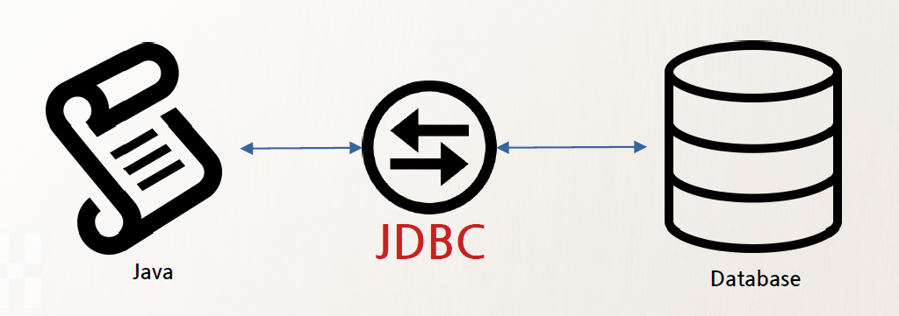

| 패키지 import 및 접속할 서버 주소 | DBMS의 사용자 이름과 패스워드 입력 | 연결을 위한 변수 선언 | 쿼리를 실행하는 Statement 변수선언 | 결과를 테이블 형식으로 받아들일 ResultSet 변수 선언 | try문을 통해 실행 | 모든 절차가 끝나면 닫는과정 실행. |
| import java.sql.*; 실행 및 String url= "jdbc:postgresql://127.0.0.1:43432/testdb"; 선언 |
String user = "scott"; String pwd = "tiger"; |
Connection con =null; | Statement stmt = null; | ResultSet rs = null; | ※설명 아래 별도 | rs.close(); stmt.close(); con.close(); |
|  | ||||||